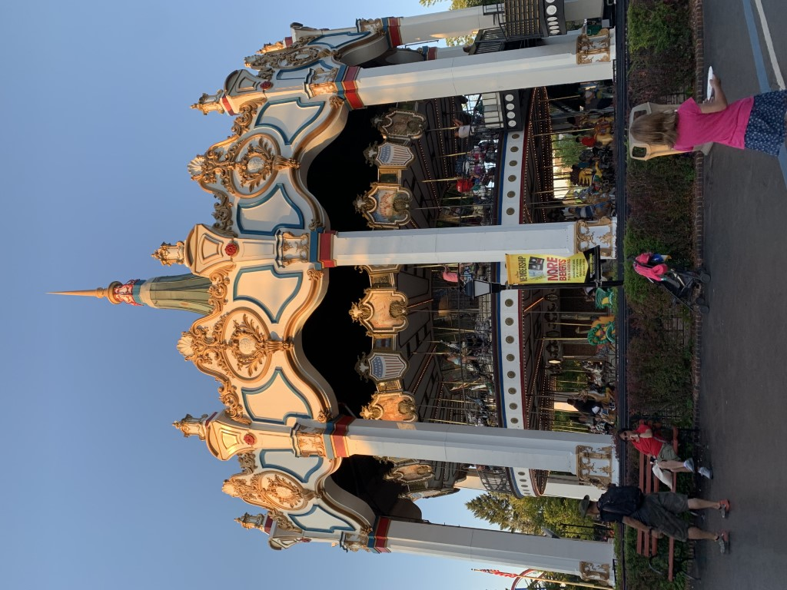
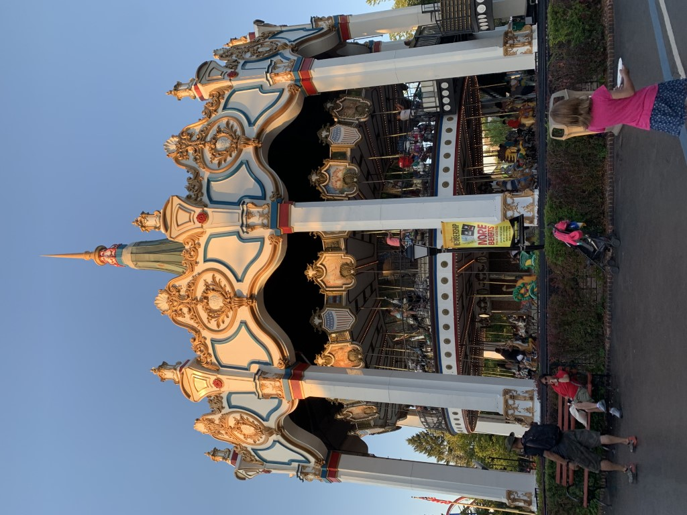

A Great Day at Six Flags Great America
My first visit to SFGAM in August 2019 started out rough, but turned out very well due to the use of a Platinum Flash Pass.
Overview
I was very excited when my parents told me 2 weeks in advance that we'd be spending a day at this park. I had been following the construction updates and opening of Maxx Force, and couldn't wait to ride it! We got to the park at opening, but Maxx Force was closed at that time. So, we collected our Platinum Flash Pass and headed to Whizzer, which was also not running. My brother and I settled for Superman Ultimate Flight instead, and waited through a delay to get on our first coaster. Going forward, every coaster I went to ride was open. My ride totals were: 4 on Raging Bull, 3 on Goliath, 2 on X-Flight, and one each on Maxx Force, Superman, Batman, Whizzer, Demon, Dark Knight, Joker, Vertical Velocity, Viper, and American Eagle (blue side). I was impressed with the size, cleanliness, and coaster selection here. The weather was beautiful on our visit, and the park way busy but not packed. We finished riding coasters at 7:30PM and left around 8. As of 2020, Six Flags Great America is a top 3 park for me.
Coasters
Here are my thoughts on the coasters from best to worst. I did not have high hopes for Raging Bull. I was shocked at how amazing this coaster was from the crazy out-of-your-seat drop (in the back row, this is my favorite drop currently), good pacing, roaring speed, and those amazing B&M clamshell restraints. Despite the trims, I got at least 5 really great sustained airtime moments in addition to the drop each time I rode. Raging Bull wasn't as good in a middle row, but still had airtime. My one criticism was the ending - Raging Bull meandered around a bit, so it would've benefited from being cut a tad shorter or having an alternate ending. I suspect this B&M hyper will be in my top 10 for many years to come. My dad and one of my brothers both rode the "big 4" coasters at SFGAM and concluded that Raging Bull was their favorite.
Up next is Maxx Force, the new for 2019 S&S launch coaster. The acceleration of the launch was terriffic, and was my favorite part of this coaster. I also want to highlight the comfy restraints and the barrel roll taken at an unreal speed. This coaster felt short but complete, and my only gripe is that I wished it were faster than 78mph. Initially I had wondered if Maxx Force could rival Top Thrill Dragster, but found out otherwise. My dad loved this coaster, but both of my brothers said the launch gave them a headache. My Flash Pass limited us to one ride on this coaster; otherwise I would've gotten on it a couple more times.
The unique RMC woodie, Goliath, was my third favorite coaster at SFGAM. I absolutely loved the inversions, especially the zero-g stall. The drop was also fantastic, and the airtime hill provided strong ejector. I am not the biggest fan of RMC's restraints though, and this coaster was not nearly as smooth as the coasters I've ridden with IBox track. The overbanked turn after the drop really slammed me into the right side each time I rode. That element dropped this coaster down several spots in my rankings. Goliath is still my second-favorite wooden coaster because it had excellent speed and inversions. One of my brothers thought this coaster was the best in the park.
X-Flight, a B&M wing coaster with decent theming is next. It is not quite as tall or fast as The Swarm at Thorpe Park, but has the edge in my rankings because of better inversions. The vest restraints on X-Flight did seem tighter than on other coasters, but I was still not bothered by them. As with The Swarm, I got very light-headed going through the in-line twist on this coaster.
Probably the biggest surprise of the day was American Eagle. When I watched a POV of this coaster, I thought the helix looked boring and pointless. This conclusion was false. Building speed on the helix felt forceful and was really cool. The rest of the layout provided excellent airtime. I had so much fun on this ride, even though it was bumpy and jerky at some parts and didn't race. Count me in as one of those people who hopes that this coaster doesn't get converted by RMC. I think a retracking and maybe new trains is all this Intamin classic needs. However, my parents and brother all found American Eagle to be too rough to enjoy. To each their own.
It was nice to ride another Superman Ultimate Flight clone. I found the restraints to be more awkward than on my previous rides on B&M flyers, especially hanging out on the brake run in the prone position. I still really enjoy this coaster model for the pretzel loop and doing maneuvers in close proximity to the track. I truly think riding a B&M flying coaster like this one is the closest I will feel to flying unless I go skydiving someday.
After a somewhat disappointing ride on Wicked Twister, I was not expecting much from Vertical Velocity. I was pleasantly surprised. I rode in the back row, and really enjoyed the frefall from the straight spike multiple times. The launch was also fun, although my dad still thinks Steel Venom at Geauga Lake was better.
Viper was a bit of a letdown. It was not as smooth as expected, and I was not too thrilled by the cookie cutter layout. There were some good airtime moments, and the shade from the shed surrounding the brake run was nice. This was a good woodie that did not wow me.
The original Batman the Ride clone was pretty standard. This B&M coaster was very smooth and intense in the back row. The inversions and pacing were awesome as usual. I just don't like how short and abundant these coasters are. All of the above coasters make my Top 50.
My first ride on a S&S 4D Free Spin, Joker, was about what I was expecting. To quote my brother, "the first time it flipped I thought the ride was broken." Indeed, the inversions were abrupt and out of control. This ride was just okay, and the operations were very slow.
Perhaps the biggest disappointment of the day was Whizzer. This coaster has a charming feel and nice setting, but that was about it for me. I rode in one car with my mom, which was extremely cramped. None of the coaster elements were very thrilling, and I would be totally fine if this ride were removed.
There is not much to be said about the wild mouse clone Dark Knight, except that there was good theming and that queueing in air conditioning was refreshing. As a side note, this was my mom's favorite ride of the day.
My least favorite coaster was Demon, which I rode in the back row. There was a lot of head banging, especially on the corkscrews. This coaster is by far the roughest one from Arrow Dynamics that I've ridden, and even makes my list of worst coasters because the head banging was that bad. I skipped the little coasters Sprocket Rockets and Little Dipper.
Other Rides
SFGAM has 2 log flumes, a shooting dark ride, a river rapids ride, and a taller-than-average Larson Loop. Also, people can pay extra to ride go-karts. There are other flat rides too, none of which I rode. To my mom's dismay, the train wasn't running on the day of our visit.
Food & Merchandise
The longest line of the day was at Go Fresh Cafe, where we ate lunch. My mom patiently waited in line while my brother and I rode X-Flight. We actually got stuck on the brake run for about 15 minutes until the ride operators dispatched the next train with some difficulties. Even with that little mishap, my mom had yet to order. Once we got our food, it was marginal. The food court area in general was crowded. Later in the day we enjoyed a delicious funnel cake sundae from Funnel Cake Foundry. Before we left SFGAM, I bought a t-shirt and keychain at Flags, a gift shop at the front of the park. I thought this shop and others that I looked in should've had better merchandise related to SFGAM instead of superheroes.
Cost
We saved $5 per ticket by buying them online. With that slight discount, we paid $60 per person and $20 to park. The 2-person Platinum Flash Pass was $260. I know that's incredibly expensive, but I was willing to pay and thought it was worth it. With the platinum level, we were only limited with what we could ride by our stamina and walking pace (except for the one-time use rule for Maxx Force). Had I not been able to skip the lines, I would've struggled to get all 13 credits and would not have gotten any re-rides. Food and merchandise cost twice as much as they should have. I know that membership and season pass programs exist and offer great deals on admission, food, and merchandise, but I cannot justify paying the subscription when I've averaged less than one day per year at a Six Flags park over the last 10 years.
Photos
These photos were taken by me or a family member. Please credit this website if used.
 
